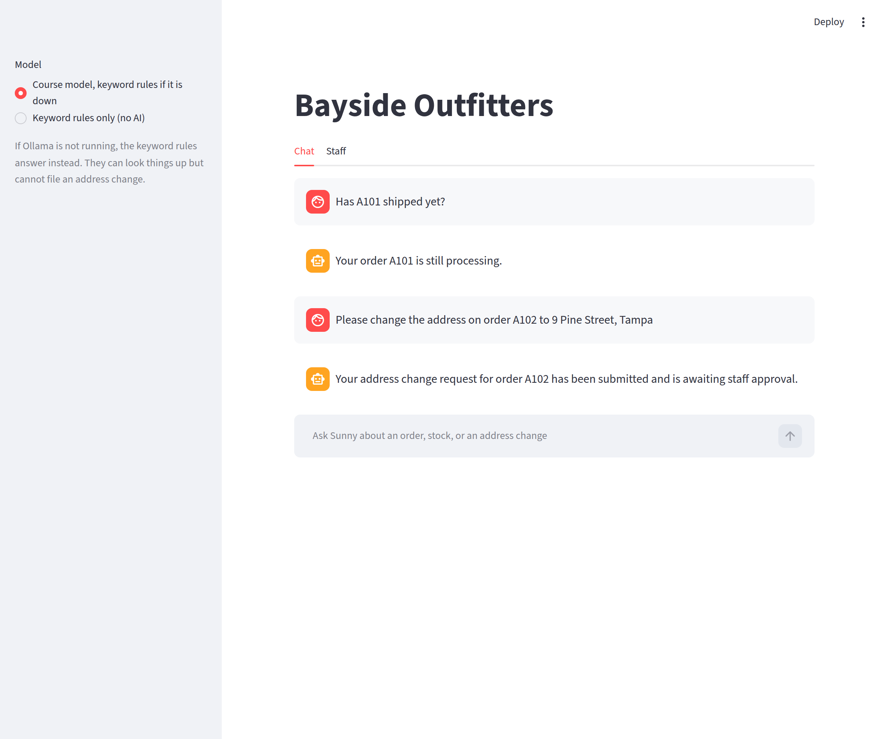
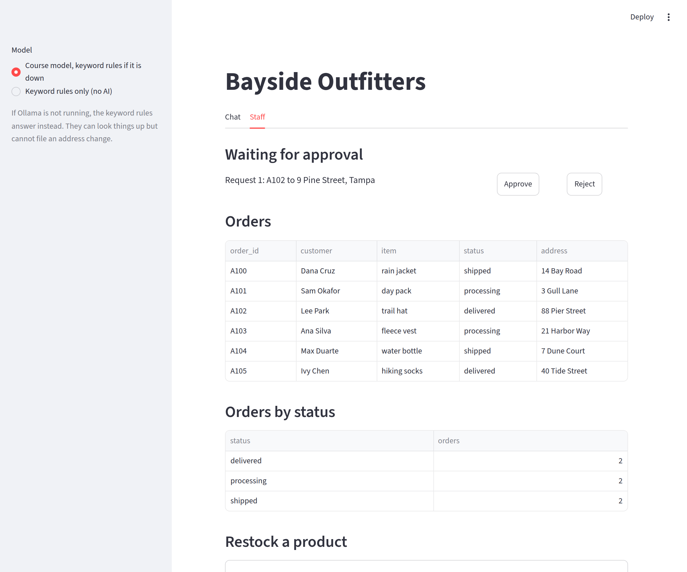
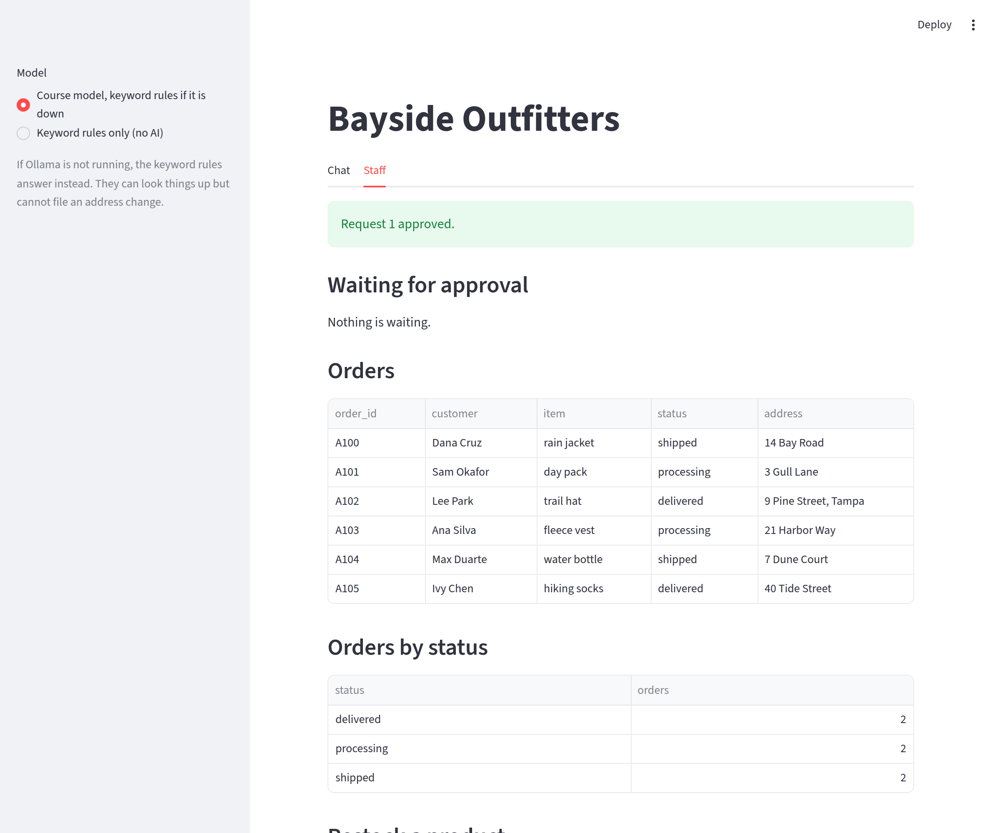

Put a web page in front of your agent: a Chat tab for customers and a Staff tab where people approve what the agent asked for.
By the end of this reading you will be able to run a Streamlit app, explain why it runs your whole script again on every click, keep the agent alive between clicks with st.session_state, and build the two tabs of your capstone: a chat for customers and a staff page that approves or rejects what the agent filed.
Staff still can’t approve anything without running Python. Your agent files change requests into the database, and main.py asks about each one in a terminal after the chat ends. Nobody at a real business works like that. This week the same agent and the same database get a web page.
st.session_state.st.chat_message and st.chat_input.GROUP BY report with st.dataframe.This is Bayside’s app, running on the course model. A customer asked two things in the Chat tab. The second one, an address change, did not change anything yet: the agent filed a request, and it waits on the Staff tab for a person. By the end of the lab your own business has the same two tabs.

A Streamlit app is an ordinary Python script. You start it with streamlit run, and it draws the page in your browser. Here is the whole trick, and the one idea of this week: every time someone clicks a button or types a message, Streamlit runs your whole script again, from the top. Watch what that does to a counter.
# counter.py
import streamlit as st
count = 0
if st.button("Add one"):
count = count + 1
st.write(f"Count: {count}")streamlit run counter.pyCount: 1The count is stuck at 1. Each click reruns the script, so count = 0 runs again before the if adds one. Nothing you set in a normal variable survives a click.
Streamlit keeps exactly one thing between runs: st.session_state. It works like an object whose attributes stay put while the same browser tab is open.
# counter_state.py
import streamlit as st
if "count" not in st.session_state:
st.session_state.count = 0
if st.button("Add one"):
st.session_state.count = st.session_state.count + 1
st.write(f"Count: {st.session_state.count}")Count: 3Count: 0"count" not in st.session_state uses in, as with a dictionary: it is True only on the very first run.st.session_state.count = 0 sets an attribute, the way self.history = [] did in Week 10.In Week 11 you learned that the model remembers nothing, so the chatbot sends it the whole history every time. Streamlit remembers nothing either. Anything that must last between clicks, such as the chatbot and its history, goes in st.session_state.
Bayside’s app.py is about 100 lines, and you will copy most of it. It starts with imports from the files you already have, then two small helpers.
# app.py
# Author: [Your Name]
import streamlit as st
from agent import SupportChatbot
from database import (
all_orders,
approve_request,
create_tables,
product_names,
reject_request,
restock,
status_report,
waiting_requests,
)
from fallback_model import FallbackModel
from keyword_model import KeywordModel
from ollama_model import OllamaModel
from settings import DB_FILE, INSTRUCTIONS, MODEL_NAME
from tools import BaysideToolsCOURSE_MODEL = "Course model, keyword rules if it is down"
KEYWORDS_ONLY = "Keyword rules only (no AI)"
def make_model(choice):
"""Return the model the sidebar asks for."""
if choice == KEYWORDS_ONLY:
return KeywordModel()
return FallbackModel(OllamaModel(MODEL_NAME), KeywordModel())
def show(text):
"""Write text in the page. A $ is escaped so Streamlit does not read it as math."""
st.markdown(text.replace("$", "\\$"))make_model turns the sidebar choice into a model: the course model with the keyword rules behind it, or the keyword rules alone. show writes text into the page. Streamlit reads a pair of $ signs as math, so a reply with two prices, like $5 and $6, would come out garbled; "\\$" is a backslash and a dollar sign (a backslash in a string is written twice), and a backslash before $ tells Streamlit to show a plain dollar sign.
create_tables(DB_FILE)
st.title("Bayside Outfitters")
choice = st.sidebar.radio("Model", [COURSE_MODEL, KEYWORDS_ONLY])
st.sidebar.caption(
"If Ollama is not running, the keyword rules answer instead. "
"They can look things up but cannot file an address change."
)create_tables runs on every rerun. That is safe, because your schema.sql uses IF NOT EXISTS and INSERT OR IGNORE. st.sidebar.radio draws the model choice in the sidebar and returns the one that is selected.
if "bot" not in st.session_state:
tools = BaysideTools(DB_FILE)
st.session_state.bot = SupportChatbot("Sunny", INSTRUCTIONS, tools, KeywordModel())
bot = st.session_state.bot
bot.model = make_model(choice)This is the counter’s pattern with a chatbot instead of a number. The chatbot is created only on the first run and kept in st.session_state.bot, so its history survives every click. The last line runs every time: it gives the same chatbot whichever model the sidebar now asks for, which is why switching models keeps the conversation.
chat_tab, staff_tab = st.tabs(["Chat", "Staff"])st.tabs returns one tab for each name, and chat_tab, staff_tab = ... unpacks them into two names in one line, first to first and second to second.
with chat_tab:
for message in bot.history:
if message["role"] != "tool":
with st.chat_message(message["role"]):
show(message["content"])
user_message = st.chat_input(
"Ask Sunny about an order, stock, or an address change"
)
if user_message:
with st.spinner("Sunny is thinking..."):
bot.respond(user_message)
st.rerun()with chat_tab: means “put what this block draws inside the Chat tab”. You know with from with open(...); here it is used for page layout.st.chat_message draws one speech bubble.st.chat_input is the box at the bottom. It returns what the customer typed on the run right after they press Enter, and None on every other run.bot.respond is the same method as in Week 12, inside st.spinner so the page says it is working. st.rerun() then starts a fresh run, which draws the history again with the new reply in it.This is the text of the chat in the screenshot above, from the same session:
You: Has A101 shipped yet?
Sunny: Your order A101 is still processing.
You: Please change the address on order A102 to 9 Pine Street, Tampa
Sunny: Your address change request for order A102 has been submitted and is awaiting staff approval.The Staff tab is where a person decides. It starts with a notice and the requests that are waiting.
with staff_tab:
if "notice" in st.session_state:
st.success(st.session_state.notice)
del st.session_state.notice st.subheader("Waiting for approval")
waiting = waiting_requests(DB_FILE)
if waiting == []:
st.write("Nothing is waiting.")
for request in waiting:
number = request["number"]
text_col, approve_col, reject_col = st.columns([4, 1, 1])
text_col.text(
f"Request {number}: {request['order_id']} to {request['new_address']}"
)
if approve_col.button("Approve", key=f"approve{number}"):
st.session_state.notice = approve_request(DB_FILE, number)
st.rerun()
if reject_col.button("Reject", key=f"reject{number}"):
st.session_state.notice = reject_request(DB_FILE, number)
st.rerun()st.rerun() reruns it again, so a message written with st.success on the click’s run would vanish at once. Instead the result goes into st.session_state.notice; the next run shows it, then del st.session_state.notice removes it so it shows only once.st.columns([4, 1, 1]) makes three columns side by side, the first four times as wide, and text_col, approve_col, reject_col = ... unpacks them.key=f"approve{number}" is a keyword argument: it names each button, because two buttons both labelled Approve need different keys.st.text, not show. More on why below.
st.subheader("Orders")
st.dataframe(all_orders(DB_FILE))
st.subheader("Orders by status")
st.dataframe(status_report(DB_FILE))def status_report(db_file):
"""Return how many orders have each status."""
sql = (
"SELECT status, COUNT(*) AS orders FROM orders GROUP BY status ORDER BY status"
)
return query_all(db_file, sql)st.dataframe draws a list of dictionaries as a table. status_report is Week 13’s GROUP BY, now inside a function: one row per status, with how many orders have it.
st.subheader("Restock a product")
with st.form("restock"):
name = st.selectbox("Product", product_names(DB_FILE))
stock = st.number_input("New stock", min_value=0, step=1)
if st.form_submit_button("Save"):
restock(DB_FILE, name, int(stock))
st.session_state.notice = f"The {name} now has {int(stock)} in stock."
st.rerun()def restock(db_file, name, stock):
"""Set how many of one product are in stock."""
change(db_file, "UPDATE products SET stock = ? WHERE name = ?", (stock, name))def product_names(db_file):
"""Return the name of every product."""
rows = query_all(db_file, "SELECT name FROM products ORDER BY name")
return [row["name"] for row in rows]Changing a dropdown would normally rerun the script at once. Inside st.form, nothing reruns until the form’s own button is pressed, so staff can pick a product and type a number, then send both together. Both min_value=0 and step=1 are keyword arguments: min_value=0 keeps the number from going below zero, and step=1 makes it count in whole numbers.
Here is the whole journey of one request, all from the same real session on the course model. First the customer asks, and the agent files a request:
You: Has A101 shipped yet?
Sunny: Your order A101 is still processing.
You: Please change the address on order A102 to 9 Pine Street, Tampa
Sunny: Your address change request for order A102 has been submitted and is awaiting staff approval.A member of staff opens the Staff tab and clicks Approve. The notice appears, nothing is waiting any more, and the order has its new address:
Request 1 approved.A100 shipped 14 Bay Road
A101 processing 3 Gull Lane
A102 delivered 9 Pine Street, Tampa
A103 processing 21 Harbor Way
A104 shipped 7 Dune Court
A105 delivered 40 Tide Street
Back in the Chat tab, the customer asks what happened. The agent does not remember the approval; it looks the request up with check_request, so the answer comes from the database:
You: What happened to request 1?
Sunny: Request 1 for order A102 has been approved.Finally, a browser refresh. A refresh starts a new session, so st.session_state is empty and the chat is gone. The address change is still in bayside.db.
chat messages: 0The address on a request is whatever the customer typed. If the Staff tab drew it with st.markdown, a customer could type [click me](https://example.com) and plant a link on the staff page, or type $5 and $6 and garble it. st.text shows text exactly as typed, so the request row can never format the page. The chat uses show, which escapes $ but still allows ordinary formatting, because there both sides are talking to each other.
Anyone who opens this app can click Approve: there is no sign-in, so the Staff tab is open to customers too. A real business would put staff behind a login. This course leaves that out (see below), but you should be able to say it is the app’s biggest gap.
streamlit run app.pyhttp://localhost:8501. In WSL, open that address in your Windows browser.python3 with add_change_request, as in Week 14.The autograder runs your tests without Streamlit or Ollama installed. So app.py stays thin: it draws things and calls functions, and every decision lives in database.py, tools.py and agent.py, which your tests already cover. The new database functions the Staff tab needs get tests of their own. Bayside’s two are the models for yours:
def test_status_report_counts_orders(tmp_path):
db_file = make_db(tmp_path)
report = database.status_report(db_file)
assert report == [
{"status": "delivered", "orders": 2},
{"status": "processing", "orders": 2},
{"status": "shipped", "orders": 2},
]def test_restock(tmp_path):
db_file = make_db(tmp_path)
database.restock(db_file, "day pack", 15)
assert database.find_product(db_file, "day pack")["stock"] == 15st.session_statest.text# counter_state.py
import streamlit as st
if "count" not in st.session_state:
st.session_state.count = 0
if st.button("Add one"):
st.session_state.count = st.session_state.count + 1
st.write(f"Count: {st.session_state.count}")if "bot" not in st.session_state:?st.text?st.form change about the restock inputs?show() pass to st.markdown for this text?show("Total: $5 and $6")The app runs. Next week: how often is it right?